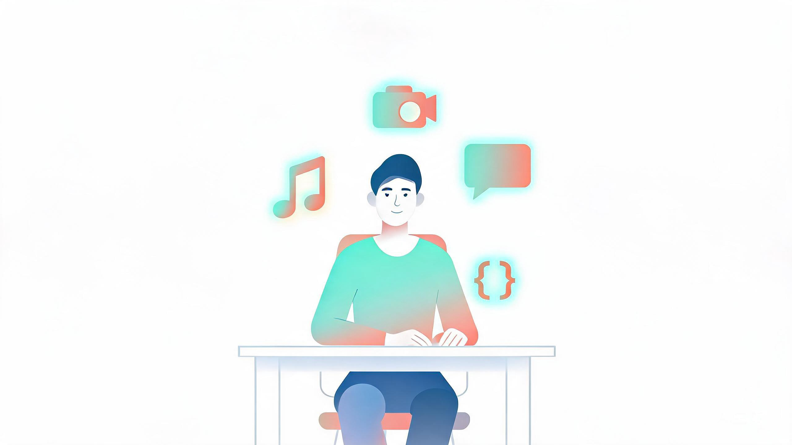
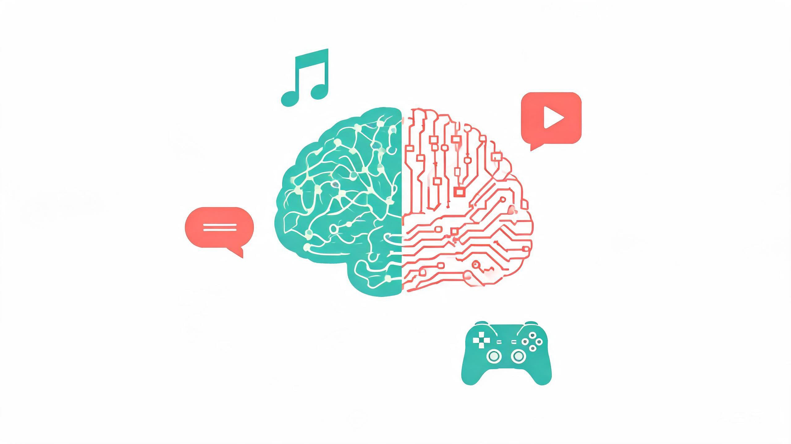

情绪断舍离 + AI提效工具全家桶
2026年最值得掌握的自我进化方法论
每天一个主题，用大白话教你学会AI时代必备的生存技能

你好，欢迎来到「每日AI进化指南」的第一期！这个栏目的目标很简单：每天帮你从最近的热门话题里挑一个最有意思的方向，深度研究后用大白话教会你。
今天我们的主题横跨三个维度——情绪管理、AI提效工具、趣味玩法。这不是三篇独立的文章拼在一起，而是一套完整的「2026年自我进化方法论」：先学会管理情绪，再借助AI工具提升效率，最后用有趣的AI应用让生活更有趣。
"人类所有烦恼皆源于人际关系。" — 阿德勒
Chapter 01 情绪断舍离：2026年最火的心理运动

你可能刷到过微博话题 #删除一些难过#，阅读量超过 8.2亿；小红书上"成年人的情绪断舍离"相关笔记超过 417万篇，抖音同名BGM播放量达到 36亿次[1]。
这不是又一阵"毒鸡汤"风潮，而是2026年上半年中文互联网上传播最广的情绪管理方法论。它的核心不是让你"别难过"，而是教你像整理衣柜一样整理情绪。
核心概念一：情绪节能
想象你的心理能量是一部手机电量。"情绪节能"不是压抑情绪，而是有意识地给情绪"做系统升级"：
- 卸载"必须被理解"的冗余程序 —— 你不需要所有人都懂你
- 关闭"别人怎么看"的后台进程 —— 别人的评价不定义你的价值
- 省出电量给真正重要的事 —— 把有限的心理能量留给工作、爱好、亲密关系
核心概念二：自洽三重能力
"自洽"是2026年心理学的超级热词。简单说就是让自己跟自己不拧巴。它包含三个层次的能力[2]：
认知主权
不由外界定义自己。别人说你"内向不好"？内向是一种性格，不是缺陷。你就是你，不需要任何人的"认证"。
独立思考 自我认同情绪反脆弱
被批评时不急于辩解，而是反问自己："这句话触发了我哪部分旧伤？"把外界的刺激变成自我认知的机会。
心理韧性 自我觉察关系弹性
温柔待人，但不把"被喜欢"当生存许可证。你可以对别人好，但你的好不应该以牺牲自己为代价。
健康边界 温柔坚定核心概念三：课题分离 —— 终结精神内耗的底层逻辑
源自阿德勒个体心理学的"课题分离"概念，在2026年持续走红。它的核心只有一句话：
谁承担后果，就是谁的课题。不背负别人的情绪，不干涉别人的选择，不允许他人入侵自己的人生节奏。
举个例子：同事对你态度冷淡。你的课题是"我是否做了什么让对方不舒服的事"，而不是"他为什么不喜欢我"。他的情绪是他的课题，你的行为是你的课题。《2026中国心理健康白皮书》显示，超过 68.3% 的25-45岁职场人将"他人是否认可我"列为首要情绪压力源[2]。
思维导图：情绪断舍离完整体系
mindmap
root((情绪断舍离))
情绪节能
卸载"必须被理解"
关闭"别人怎么看"
省出心理电量
自洽三重能力
认知主权
不由外界定义自己
情绪反脆弱
被批评时反问旧伤
关系弹性
不把"被喜欢"当许可证
课题分离
谁承担后果谁的课题
不背负别人情绪
不干涉别人选择
实操方法
崩溃3小时内启动修复
喝温水
触摸柔软物品
写下3个需求词
社交三不原则
不查手机
不问薪资
不劝结婚
实操：崩溃后3小时自我修复协议
2026年心理学界的新共识：情绪韧性 ≠ 永不崩溃，而是崩溃后能快速修复。操作方法极其简单[1]：
- 喝一杯温水（激活副交感神经，让身体从"战斗模式"切换到"修复模式"）
- 触摸柔软的东西（毯子、毛绒玩具、宠物都可以，触觉刺激能释放催产素）
- 写下"此刻我需要什么"三个词（比如"安静""拥抱""碳水"，不需要多，三个词就够）
Chapter 02 DESC模型：LinkedIn评选的2026年第一职场技能
LinkedIn 2025年"Skills on the Rise"报告将冲突缓解（Conflict Mitigation）列为2026年增速第一的核心技能，超过了适应力、AI素养等热门能力。美国调查显示 30% 的求职者认为同事比三年前更具对抗性[3]。
最被广泛推荐的工具是 DESC模型，一个结构化、非对抗地解决冲突的四步框架：
| 步骤 | 英文 | 含义 | 大白话解释 | 举例 |
|---|---|---|---|---|
| D | Describe | 客观陈述事实 | 像摄像头一样说发生了什么，不加评价 | "过去两个冲刺，设计规格在开发启动后才到达" |
| E | Express | 表达影响 | 用"我感觉..."开头，说这件事对你的影响 | "我感到担心，因为这导致代码返工，影响发布日期" |
| S | Specify | 提出期望 | 具体说你希望对方怎么做 | "能否约定规格在冲刺开始前两天锁定？" |
| C | Consequences | 描述积极结果 | 画出改变后的美好画面 | "这样我们可以按时交付，减少至少一半返工" |
关键技巧：I-Statement公式
把"你从不XXX"换成这个句式：
"当 [具体事件] 发生时，我感到 [你的感受]，因为 [原因]。我希望 [具体改变]。"
例："当你在我说话时看手机，我感到不被尊重，因为我觉得我的意见没有被认真对待。我希望在我们讨论时能放下手机几分钟。"
5句万能降火话术
"帮我理解你的视角"
把对抗变成好奇，对方的攻击姿态会立刻软化
"我想我们目标一致"
先建立共识基础，再讨论分歧点
"先找出分歧在哪"
把"你是错的"变成"我们来对齐一下"
"我宁愿做对而非做快"
暗示对方赶工可能带来更大问题
"能花10分钟对齐一下吗？"
具体时间降低对方心理负担，容易答应
Chapter 03 2026年7月AI提效工具全景图
说完心态和沟通方法，我们来聊最硬核的提效工具。2026年7月的AI工具圈发生了不少大事，我帮你筛选出了普通人最该关注的几个。
flowchart TB
A[2026年7月 AI提效工具全景图] --> B[AI自动化]
A --> C[AI视频创作]
A --> D[AI智能体协作]
A --> E[AI编程]
B --> B1["Claude 录屏学技能
录屏演示 → AI自动执行"]
B --> B2["ChatGPT Work
团队自动化智能体"]
B --> B3["GPT-5.6 三档模型
Sol旗舰/Terra均衡/Luna低成本"]
C --> C1["豆包 Seedance 2.0
文字生成30秒视频"]
C --> C2["Runway Gen-4
免费20次/天"]
C --> C3["剪映AI版
一站式后期"]
D --> D1["Zapier AI Agents
7000+应用集成"]
D --> D2["Notion AI 2.5
跨项目研究"]
D --> D3["Perplexity Deep Research
深度研究报告"]
E --> E1["Cursor 0.45
后台Agent异步编程"]
E --> E2["GitHub Copilot Workspace
自然语言生成代码"]
E --> E3["Kimi K2.5
视觉智能助手"]
重点推荐一：Claude「录屏学技能」—— 录一次屏，AI替你干活
这是2026年7月最出圈的AI功能。Anthropic在7月21日给Claude桌面端上线了 「Record a Skill」 功能[4]。
它能做什么：你只需要录屏+语音讲解一个操作流程（比如"怎么把Excel里的数据整理成周报"），Claude就会自动把你的演示转化成一个可复用的"技能"。之后你只需要点一下，AI就会自动帮你执行这个流程。
大白话版本：就像教一个很聪明的实习生做事。你操作一遍给他看，他学会了，以后每周都替你做。完全不需要写代码。
怎么用：
- 打开Claude桌面端，点击Cowork界面的"+"号
- 选择"Record a Skill"，开始录屏
- 一边操作一边语音讲解你在做什么（中文、英文都行）
- 录完后，Claude会自动分析并创建这个技能
- 以后需要做同样的操作，直接让Claude执行就行
重点推荐二：GPT-5.6 + ChatGPT Work —— AI从聊天框变成"同事"
OpenAI在7月9日发布的GPT-5.6系列分成了三个档次[5]：
| 版本 | 定位 | 适合场景 | 亮点 |
|---|---|---|---|
| Sol | 旗舰模型 | 复杂编程、深度分析 | 编程效率提升54%，支持Ultra模式（4个Agent并行） |
| Terra | 均衡模型 | 日常问答、写作、翻译 | 性价比最高 |
| Luna | 低成本模型 | 简单问答、快速查询 | 速度最快，成本最低 |
分层使用模型：简单任务（查天气、翻译短句、问路）用Luna，省电又省钱；写报告、分析数据才用Sol。就像出门买菜骑自行车，出差才坐飞机。
更值得关注的是 ChatGPT Work：它能让AI通过MCP协议直接连接你的Slack、Gmail、GitHub等工作工具，自主管理项目、安排会议[5]。Nvidia、维珍航空等大公司已经在用了。
重点推荐三：AI视频创作链路 —— 零成本产出专业视频
2026年7月是AI视频工具集中爆发的一个月。普通人不需要任何视频制作经验，照着下面的链路就能做出专业视频[6]：
flowchart LR
A["灵感/想法"] --> B["豆包/ChatGPT
写脚本"]
B --> C{"选择视频生成工具"}
C --> D["Runway Gen-4
创意质感视频
20次/天免费"]
C --> E["豆包 Seedance 2.0
中文场景友好
30秒长视频"]
C --> F["Kling 可灵
国产高质量
动态表现力强"]
D --> G["剪映AI版
配音+字幕+BGM+转场"]
E --> G
F --> G
G --> H["成品视频
发布到抖音/小红书/B站"]
7月免费额度从5次/天大幅提升到20次/天，创意视频质量业内领先。适合做有艺术感、质感高级的短视频。
国产免费AI视频生成，文字输入即可生成30秒高质量视频。中文场景理解力强，适合做日常主题的短视频。
AI生成视频后，用剪映AI版完成后期合成：AI自动配音、自动字幕、智能BGM匹配、一键转场。整个后期流程一站式解决。
重点推荐四：Perplexity Deep Research —— 让AI帮你做深度调研
当你需要对某个话题做深度了解（比如"2026年新能源汽车市场趋势"），不要自己去一个个搜网页。直接打开Perplexity的 Deep Research 模式[7]：
- 输入你的研究问题（越具体越好）
- AI会自动浏览数十个来源，提取关键信息
- 输出一份带引用的完整研究报告
- 所有引用都可以点击验证，不用担心AI编造
写论文前做文献调研、出差前了解目的地信息、做投资决策前了解行业趋势、写方案前收集竞品资料。一句话：需要你打开10个以上网页才能搞清楚的事情，都可以交给Deep Research。
Chapter 04 趣味AI应用：让生活多50%的乐趣
学会了情绪管理和提效工具，我们再来点轻松的。以下是2026年7月最值得玩的AI应用，每一个都能让你"哇"出声。
我的Top 3推荐玩法
打开Suno → 输入你朋友的一件趣事作为歌词 → 选择一个搞笑曲风（比如"摇滚版"）→ 生成 → 在iMessage里直接发送。想象一下，你的朋友打开聊天，突然听到一首关于他自己的歌，反应绝对精彩。
打开Loopit → 输入"一个点击屏幕就会爆炸烟花，配合手机晃动的小游戏" → AI自动生成 → 分享给同事。午休时大家一起玩，瞬间拉近关系。
打开小红书创作者中心 → Builder Hub → 选"互动测试"模板 → 设计5个关于友谊的问题 → 发布到笔记 → 分享给朋友测试。这是低成本社交的最佳方式。
Chapter 05 EQ + 人格适配沟通法：一开口就让人舒服
最后这部分把AI工具和为人处事结合起来。2026年沟通领域的一个重要趋势是：用人格框架来精准适配沟通方式[14]。
S.T.O.P.技术：沟通前的3秒自我调节
90%的高绩效者具备高EQ。他们的秘诀是在沟通前用S.T.O.P.技术自我调节：
| 字母 | 含义 | 大白话 |
|---|---|---|
| S | Stop 暂停 | 别急着说话，先停3秒 |
| T | Take a breath 深呼吸 | 吸一口气，让脑子清醒 |
| O | Observe 观察 | 观察一下自己的情绪：我现在是生气？紧张？还是焦虑？ |
| P | Proceed 行动 | 带着觉察去说话，而不是被情绪牵着走 |
DISC人格快速适配沟通
你不需要做专业的人格测试，只需要快速判断对方属于哪类，然后调整你的沟通风格：
flowchart TB
A{快速判断对方类型} --> B["D - 支配型
说话快、语气强、目标导向"]
A --> C["I - 影响型
热情、爱说、有感染力"]
A --> D["S - 稳健型
温和、有耐心、重关系"]
A --> E["C - 谨慎型
重数据、逻辑强、追求完美"]
B --> B1["✅ 沟通要点
直接说结论
给他选择权
不要拐弯抹角"]
C --> C1["✅ 沟通要点
先聊感受再谈事
给他关注和认可
用故事和案例"]
D --> D1["✅ 沟通要点
慢慢建立信任
给他安全感和时间
提前告知变化"]
E --> E1["✅ 沟通要点
提前发数据让他消化
用事实和逻辑说服
不要催促快速决策"]
对D直接说结论，对I先聊感受再谈事，对S给他安全感，对C先发数据再沟通。
结论先行公式：3秒抓住注意力
无论对方是什么人格，职场沟通中"结论先行"永远有效。记住这个万能公式[15]：
结果 + 原因 + 下一步
❌ "我昨天跟客户打了电话，客户说需求有变，产品部那边说时间不够，所以可能要延期..."
✅ "项目需要延期一周。原因是客户昨天更改了核心需求。下一步我已经跟产品部对齐了新方案，明天发给你确认。"
Chapter 06 今日总结 + 行动清单
恭喜你读完了第一期「每日AI进化指南」！今天我们覆盖了从情绪管理到AI工具再到沟通技巧的完整方法论。别急着关掉页面，先挑3件事今天就做：
今日行动清单
mindmap
root((今日行动))
必做
写下"此刻我需要什么"三个词
体验情绪觉察
试用一次S.T.O.P.技术
下次想发火前
应做
打开Perplexity Deep Research
输入一个你好奇的话题
给一个朋友用Suno生成一首歌
可做
用Loopit做一个解压小游戏
研究DESC模型
找一个真实的冲突场景练习
🎯 必做（5分钟）
现在就写下"此刻我需要什么"三个词。这是今天最简单的情绪觉察练习。
⚡ 应做（15分钟）
打开Perplexity，用Deep Research模式输入一个你好奇的问题，体验AI帮你做深度调研的感觉。
🌟 可做（30分钟）
找一个真实的冲突场景，用DESC模型写一遍你的回应。对照之前的"你从不XXX"模式，感受区别。
明天我会为你带来一个全新的主题方向，敬请期待。如果你有特别想了解的话题，随时告诉我！